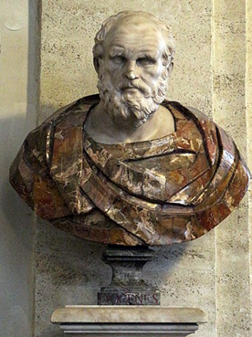
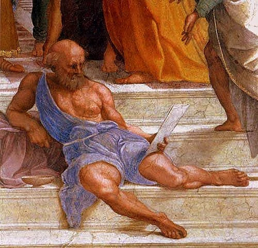
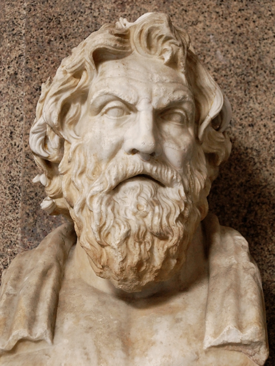
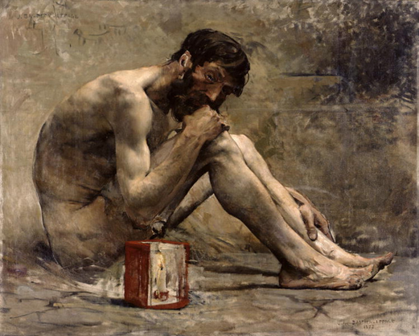

Диоген
Тролль. Философ. Космополит. Собака.
Краткая биография

Древнегреческий философ Диоген родился около 412 года до нашей эры в городе Синопа, расположенном на
южном побережье Черного моря. В молодости он помогал отцу и вместе с ним занимался разменом монет и
фальшивомонетничеством.
Когда их уличили, Диоген был вынужден бежать. Позднейшие биографы Диогена, пытаясь оправдать столь
позорную страницу в жизни нашего героя, сообщают легенду, что во время посещения Дельф пифия посоветовала молодому
Диогену «переоценивать ценности», что он воспринял буквально, начав обрезать монету. После
неудачного опыта с монетами, он якобы понял, что речь шла не о материальных, а о духовных ценностях.
В течение жизни Диоген встречался со многими великими людьми того времени — Платоном, Аристиппом,
Демосфеном, Александром Македонским, Евклидом и др. Детали этих встреч, в которых нищий мудрец
высмеивает богатство и власть, носят легендарный характер. Эти истории импонировали бедному простому
народу, в связи с чем стали популярными и сохранились до наших дней.
Диоген и Платон
Античные источники приводят множество историй о взаимоотношениях двух философов. В них Диоген
опровергает и высмеивает утверждения Платона. В отличие от других мыслителей, с которыми Платон мог
дискутировать, перед Диогеном он зачастую оказывался бессилен. Диоген вёл диалог «с участием живой
плоти», и Платону ничего не оставалось как прибегать к диффамации своего оппонента. Он называл его
«обезумевшим Сократом». Это утверждение вместо издёвки было воспринято как признание Диогена,
которое поставило его на одну ступень с Сократом.
Когда Платон дал определение, имевшее большой успех: «Человек есть животное о двух ногах, лишённое
перьев», Диоген ощипал петуха и принёс к нему в школу, объявив: «Вот платоновский человек!» На что
Платон к своему определению вынужден был добавить «…и с плоскими ногтями».
А вот случай, который очень хорошо иллюстрирует метод Диогена. Когда один из адептов элейской школы
пытался очередной раз доказать основной тезис, который отстаивали философы этой школы, что истинное
бытие есть неподвижным и неделимым, то есть движения нет, оно – иллюзия чувственного мира, Диоген
просто встал и стал ходить перед докладчиком.
Космополитизм

Космополитизм – это идеологическая концепция, согласно которой каждый человек является «гражданином
мира» и принадлежит к единой мировой культуре. При этом деление на государства, нации и народы
считается устаревшим. Человек рассматривается как личность, которая должна обладать полной свободой
перемещения по планете (а в будущем – по Солнечной системе).
Он отрицает культурную, национальную и историческую привязанность. В рамках данной идеологии
считается, что мировая культура в одинаковой степени принадлежит всем людям мира. При этом степень
отрицания государственной, национальной и иной принадлежности может варьироваться, но в конечном
счёте всё сводится к полному отказу от национальности и гражданства одной страны.
Именно Диоген придумал слово «космополит», или гражданин мира. Это шокировало общество – как,
впрочем, и все остальное, что он делал. Граждане Эллады ассоциировали себя с определенным полисом,
а Диоген отрицал понятия отечества и местных законов. Он признавал лишь закон природы, которому
необходимо следовать.
Киники. Аскетизм
Диоген избрал своим учителем философа Антисфена, бывшего ученика Сократа и основателя школы «киников», суть
учения которых состояла в естественности, избавлении от условностей и искусственностей, свободе от
обладания лишним и бесполезным. Для достижения блага следует жить «подобно собаке», сочетая в себе:
простоту жизни и презрение к условностям, умение твердо отстаивать свой образ жизни, верность,
храбрость и благодарность.
Себя называл «истинным псом» и, собственно, от этого термина происходит
название его философского направления «кинизм».
Практика аскетизма диогеном

Согласно легенде, философ вначале отказался обучать Диогена и даже замахнулся на него палкой, тот
сказал «Бей, но ты не найдешь такой крепкой палки, чтобы прогнать меня, пока ты что-нибудь не скажешь».
Диоген стал учеником Антисфена и в дальнейшем - наиболее ярким представителем кинизма и эпатажные его
выходки, о которых мы будем говорить далее – это не что иное, как иллюстрация к основным положениям
этого учения.
Желая закалить свое тело, летом Диоген лежал на горячем песке, а зимой обнимал холодные статуи, спал
на плаще. Ел на площади, на виду у всех, что, по тогдашним понятиям, считалось неприличным: «Если
можно голодать на площади, то почему нельзя и есть на площади?» Кормился подаянием, требуя его, как
должного: «Если ты даешь другим - дай и мне, если не даешь - начни с меня».
Ему говорили: «Ты живешь
как собака». Он отвечал: «Да: давшему виляю, на недавшего лаю, недоброго кусаю».
Диоген постарался избавиться от всех ненужных вещей. Из посуды у него была только миска и чашка.
Но увидев, как мальчик пьет воду из горсти, он выбросил чашку, а после того, как заметил, что кто-то
ест чечевичную похлебку из куска выеденного хлеба, разбил и миску.
Свобода в аскетизме
В результате длительного пребывания в Афинах, Диоген решил отправиться странствие, однако его захватили
пираты и продали в рабство в Коринфе. В рабстве утверждал, что умеет делать «хороших людей», говорил,
что купивший его купить себе «хозяина». Ксениад, купивший Диогена человек, очень возмутился словам
философа, что господин должен слушаться своего раба, но философ парировал: «Если бы ты был болен и
купил себе врача, ты ведь слушался бы его, а не говорил бы, что вспять потекли источники рек».
Однако, уровень жизни Диогена в рабстве вырос из-за необходимого порядка, труда и увеличения состояния.
Был наставником детей Ксениада, обучал их литературе, истории, умению ездить верхом и владению оружием,
а также заниматься физическими упражнениями для поддержания своей физической формы и здоровья.
Ему помогли открыть в предместье Коринфа Крании гимнасий, где собирались его ученики, то есть основал
свою философскую школу.
Влияние на современников

Некоторые сравнивают его с нынешними хиппи, бродягами и городскими индейцами. Это дикий, склонный к
шуткам и выходкам хитрый тип: плащ на все времена года; посох; котомка с разной мелочью, на ногах —
сандалии. Такой внешний вид, если он принимался свободным гражданином, несколько шокировал, тем
более во времена, когда для афинянина было стыдно показываться на лю¬дях без сопровождения раба.
Однако, степень влияния Диогена на современников определялась, вовсе не эстетикой.
Диоген имел много учеников, некоторые из
которых были бедняками и рабами. Наиболее известными из них стали Кратет Фиванский, Онесикрит из
Астипалеи, Филиск с Эгины, Моним Сиракузский, Метрокл, Гиппархия и др. Он,
проповедуя аскетический образ жизни, презирал роскошь, довольствуясь одеждой бродяги, используя для
жилья винную бочку, а в средствах выражения зачастую был прямолинеен и груб.
Успешное его влияние не в последнюю очередь основывается на том, что он был учителем, который не
желал иметь учеников, подражающих ему. Теория и практика в его философии теснейшим и непредсказуемым
образом переплетаются, и согласие с ним только лишь в области теории или только в области практики
еще ничего не дает. Впечатление на него произвели бы только характеры, которые восприняли от него
присутствие духа, готовность наносить удары, способность постоянно быть начеку и независимое
чувство жизни.